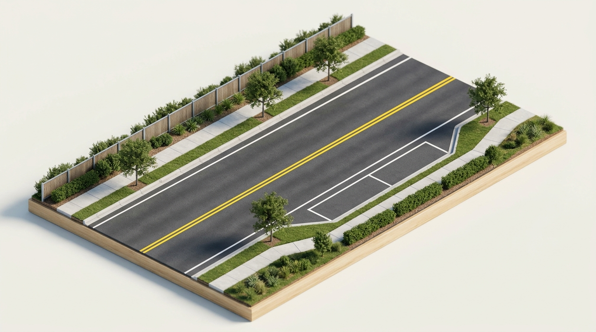
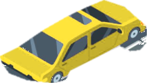

Kinetic Trajectories & Statutory Spacing
Maneuvers: Passing, Turning, and Parking
Operating across opposing lanes, crossing pedestrian paths, and securing stationary vehicles require non-negotiable statutory margins. Master the codified geometric rules under Texas Transportation Code Chapter 545.
"An operator passing another vehicle proceeding in the same direction shall pass to the left at a safe distance and may not move back to the right until safely clear. On roadways with oncoming traffic, the maneuver must be completed before coming within 200 feet of an oncoming vehicle."
The Passing Zone (Passing & Being Passed)




The 7 Steps of Turning
Decide on Your Turn Well in Advance
Never make a last-second decision to turn. If you miss your street, turn at the next intersection rather than swerving across lanes or attempting hazardous multi-lane cuts.
The Parking Distance Explorer (TTC § 545.302)
Fire Hydrant Mandatory Clearance
An operator may not stand or park an occupied or unoccupied vehicle within 15 feet of a fire hydrant, except temporarily to pick up or discharge a passenger.
Parking & Standing Restrictions
Strict liability violations carrying escalating municipal and penal sanctions across Texas jurisdictions.
Disabled Parking Space Restrictions
It is illegal to park, stop, or stand in a designated accessible parking space or the adjacent striped access aisle without displaying a valid state-issued disabled placard or specialized license plate.
Unattended Motor Vehicle Rules
An operator may not leave a vehicle unattended without first completing statutory safety measures to prevent accidental rollaway and vehicular theft on public thoroughfares.
Parking Execution (Parallel & Hills)
Precision placement within 18 inches of the curb and gravitational lockouts on inclines under TTC § 545.301 & 302.
Parallel Parking: 4 Stages
TARGET: 6" · MAX: 18"Stop parallel to the front vehicle approximately 2 to 3 feet away, aligning your rear bumper with the vehicle's rear bumper. Signal your right turn early.
Hill Parking Wheel Angle
SELECT TOPOLOGY:Turn wheels sharp left (away from curb). If brakes fail, the back of the front tire rolls backward and chocks squarely against the concrete curb, arresting all downhill momentum.
Backing & Coasting (TTC § 545.405 & § 545.406)
An operator may not back a vehicle unless the movement can be made with safety and without interfering with other traffic. Backing on a shoulder or roadway of a limited-access highway is strictly prohibited.
Coasting in Neutral on a Downgrade is Illegal
An operator may not coast with the transmission in neutral or with the clutch disengaged while traveling on a downgrade. Coasting decouples the engine, eliminates engine braking, compromises power steering assist, and leads to rapid brake overheating.
Statutory Maneuver Verification
1. Under Texas Transportation Code § 545.054, when must an operator complete a pass and return to the right lane before an oncoming vehicle?
2. When parking headed uphill on a two-way street with a curb, in which direction should you turn the front wheels?